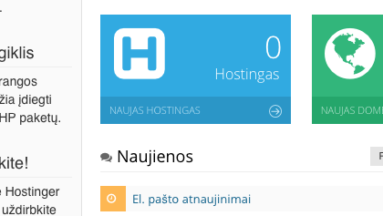
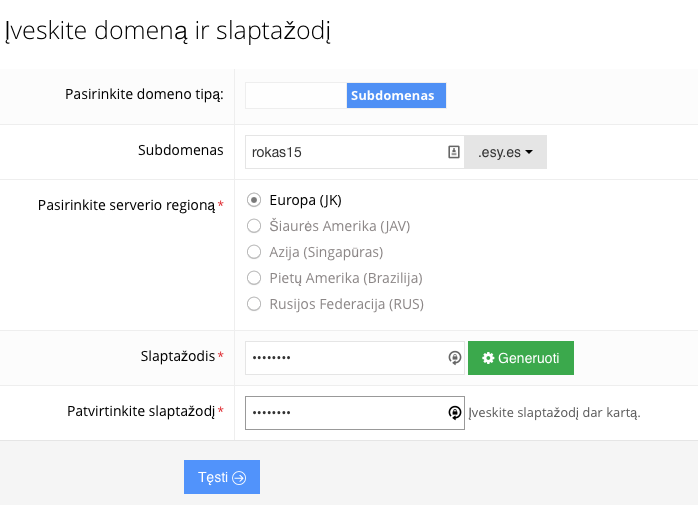
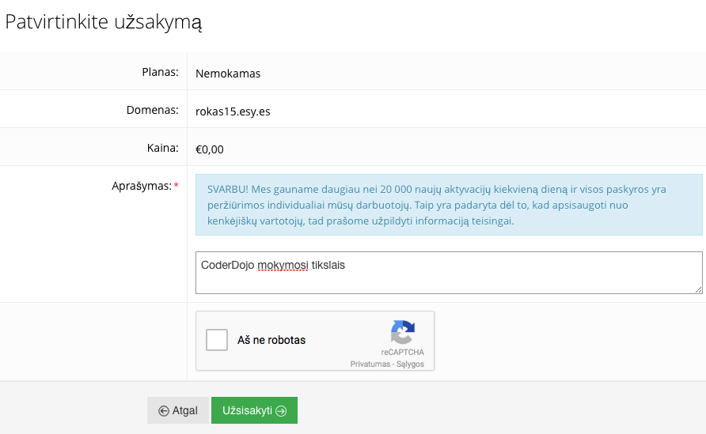
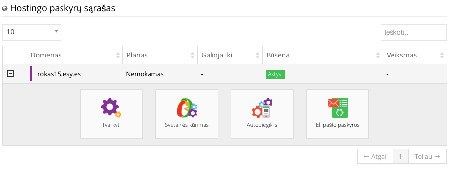
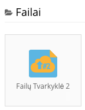
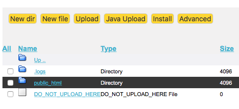

Svetainės kūrimas (pirma dalis)
Pasiruošimas
- Atsisiųsti svetaine.zip failą ir išskleisti and darbalaukio.
- Atsisiųsti Notepad++ zip versiją paleidimui be instaliacijos (antra "downloads" sąraše).
Pagrindinis puslapis
-
Atverti index.html dokumentą. Trumpai apžvelgti ką reiškia kodas ir "tagsai" jame.
-
Atverti index.html dokumentą naršyklėje.
-
Vietoje žvaigždutės įrašykite savo vardą: "* interneto svetainė".
Išsaugokite.
Vėl pažiūrime index.html ir pokyčius jame.
Įrašykite savo sugalvotą sakinį vietoje "Tai pirmoji mano interneto svetainė".
Knygų puslapis
-
Naršyklėje atveriame books.html dokumentą.
Atveriame jį ir Notepad++ programoje.
Įrašome tris labiausiai patinkančias knygas.
-
Nukopijuojame paveikslėlio tagsą iš index.html į books.html, kode pakeičiame paveikslėlio nuorodą iš "singer.gif" į "bike.gif".
Pažiūrime kaip atrodo naršyklėje.
-
Atsisiųskite iš interneto patikusį judantį ".gif" paveikslėlį ir įkelkite jį į darbo aplanką.
Pakeiskite jo pavadinimą books.html kode.
[Svarbu: dokumentų pavadinimai gali būti tik mažosiomis raidėmis, be lietuviškų raidžių ir be simbolių].
Filmų puslapis
- Atveriame darbo katalogą ir kopijuojame books.html dokumentą, pervadiname jį į movies.html.
- Atveriame movies.html naršyklėje ir Notepad++.
- Įrašome tris labiausiai patinkančius filmus. Išsaugom.
- Šiame puslapyje taip pat galime įkelti paveikslėlį
Pagrindinio puslapio nuorodų papildymas
- Atveriame "Notepad++" programa index.html dokumentą.
- Pridedame dar vieną nuorodą į puslapį movies.html, kurią pavadinsime "Filmai".
- Išsaugome ir patikriname ar naršyklėje nuorodos veikia.
Svetainės įkėlimas į internetą (antra dalis)
-
Atveriame Hostinger.lt ir susikuriame naują paskyrą.
Turintiems galimybę geriau kurti naudojant Facebook ar Google, nes registracijos el. paštu ribojamos.
- Užsiregistravusiems el. paštu turi ateiti patvirtinimo nuoroda el. paštu, kurią reikia paspausti.
Pasirinkite "Naujas hostingas"

Pasirinkite "Užsakyti"
Įrašykite subdomeną ir slaptažodį
Šiame žingsnyje svarbu neperjungti "domeno". Turi rodyti tik mėlyną "subdomenas" laukelį. Ar žinote kuo skiriasi domenas nuo subdomeno?

Įrašykite į aprašymą "CoderDojo mokymosi tikslais"

Pasirinkite "Tvarkyti"

Pasirinkite "Failų tvarkyklė 2"

Atverkite "public_html"
Visi svetainės dokumentai turi būti įkelti tik šiame aplanke, kitaip svetainė neveiks.

Ištrinkite default.php dokumentą ir įkelkite savo interneto svetainės dokumentus
Nepamirškite ištrinti darbo katalogų jei naudojotės bibliotekos kompiuteriais.